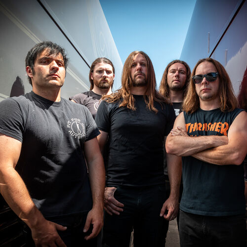

Synopsis of Metal
Heavy metal (or simply metal) is a genre of rock music that developed in the late 1960s and early 1970s, largely in the United Kingdom and United States.[2] With roots in blues rock, psychedelic rock and acid rock, heavy metal bands developed a thick, monumental sound characterized by distorted guitars, extended guitar solos, emphatic beats and loudness. In 1968, three of the genre's most famous pioneers – British bands Led Zeppelin, Black Sabbath and Deep Purple – were founded.[3] Though they came to attract wide audiences, they were often derided by critics. Several American bands modified heavy metal into more accessible forms during the 1970s: the raw, sleazy sound and shock rock of Alice Cooper and Kiss; the blues-rooted rock of Aerosmith; and the flashy guitar leads and party rock of Van Halen.[4] During the mid-1970s, Judas Priest helped spur the genre's evolution by discarding much of its blues influence,[5][6] while Motörhead introduced a punk rock sensibility and an increasing emphasis on speed. Beginning in the late 1970s, bands in the new wave of British heavy metal such as Iron Maiden and Saxon followed in a similar vein. By the end of the decade, heavy metal fans became known as "metalheads" or "headbangers". The lyrics of some metal genres became associated with aggression and machismo,[7] an issue that has at times led to accusations of misogyny. During the 1980s, glam metal became popular with groups such as Bon Jovi, Mötley Crüe and Poison. Meanwhile, however, underground scenes produced an array of more aggressive styles: thrash metal broke into the mainstream with bands such as Metallica, Slayer, Megadeth and Anthrax, while other extreme subgenres such as death metal and black metal became – and remain – subcultural phenomena. Since the mid-1990s, popular styles have expanded the definition of the genre. These include groove metal and nu metal, the latter of which often incorporates elements of grunge and hip-hop.
Heavy metal is traditionally characterized by loud distorted guitars, emphatic rhythms, dense bass-and-drum sound and vigorous vocals. Heavy metal subgenres variously emphasize, alter or omit one or more of these attributes. In a 1988 article, The New York Times critic Jon Pareles wrote, "In the taxonomy of popular music, heavy metal is a major subspecies of hard-rock—the breed with less syncopation, less blues, more showmanship and more brute force."[8] The typical band lineup includes a drummer, a bassist, a rhythm guitarist, a lead guitarist and a singer, who may or may not be an instrumentalist. Keyboard instruments are sometimes used to enhance the fullness of the sound.[9] Deep Purple's Jon Lord played an overdriven Hammond organ. In 1970, John Paul Jones used a Moog synthesizer on Led Zeppelin III; by the 1990s, synthesizers were used in "almost every subgenre of heavy metal".[10]

The electric guitar and the sonic power that it projects through amplification has historically been the key element in heavy metal.[11] The heavy metal guitar sound comes from a combined use of high volumes and heavy fuzz.[12] For classic heavy metal guitar tone, guitarists maintain gain at moderate levels, without excessive preamp or pedal distortion, to retain open spaces and air in the music; the guitar amplifier is turned up loud to produce the "punch and grind" characteristic.[13] Thrash metal guitar tone has scooped mid-frequencies and tightly compressed sound with multiple bass frequencies.[13] Guitar solos are "an essential element of the heavy metal code ... that underscores the significance of the guitar" to the genre.[14] Most heavy metal songs "feature at least one guitar solo",[15] which is "a primary means through which the heavy metal performer expresses virtuosity".[16] Some exceptions are nu metal and grindcore bands, which tend to omit guitar solos.[17] With rhythm guitar parts, the "heavy crunch sound in heavy metal ... [is created by] palm muting" the strings with the picking hand and using distortion.[18] Palm muting creates a tighter, more precise sound and it emphasizes the low end.[19] The lead role of the guitar in heavy metal often collides with the traditional "frontman" or bandleader role of the vocalist, creating a musical tension as the two "contend for dominance" in a spirit of "affectionate rivalry".[9] Heavy metal "demands the subordination of the voice" to the overall sound of the band. Reflecting metal's roots in the 1960s counterculture, an "explicit display of emotion" is required from the vocals as a sign of authenticity.[20] Critic Simon Frith claims that the metal singer's "tone of voice" is more important than the lyrics.[21] The prominent role of the bass is also key to the metal sound, and the interplay of bass and guitar is a central element. The bass provides the low-end sound crucial to making the music "heavy".[22] The bass plays a "more important role in heavy metal than in any other genre of rock".[23] Metal basslines vary widely in complexity, from holding down a low pedal point as a foundation to doubling complex riffs and licks along with the lead or rhythm guitars. Some bands feature the bass as a lead instrument, an approach popularized by Metallica's Cliff Burton with his heavy emphasis on bass solos and use of chords while playing the bass in the early 1980s.[24] Lemmy of Motörhead often played overdriven power chords in his bass lines.[25] The essence of heavy metal drumming is creating a loud, constant beat for the band using the "trifecta of speed, power, and precision".[26] Heavy metal drumming "requires an exceptional amount of endurance", and drummers have to develop "considerable speed, coordination, and dexterity ... to play the intricate patterns" used in heavy metal.[27] A characteristic metal drumming technique is the cymbal choke, which consists of striking a cymbal and then immediately silencing it by grabbing it with the other hand (or, in some cases, the same striking hand), producing a burst of sound. The metal drum setup is generally much larger than those employed in other forms of rock music.[22] Black metal, death metal and some "mainstream metal" bands "all depend upon double-kicks and blast beats".[28]
Next Page